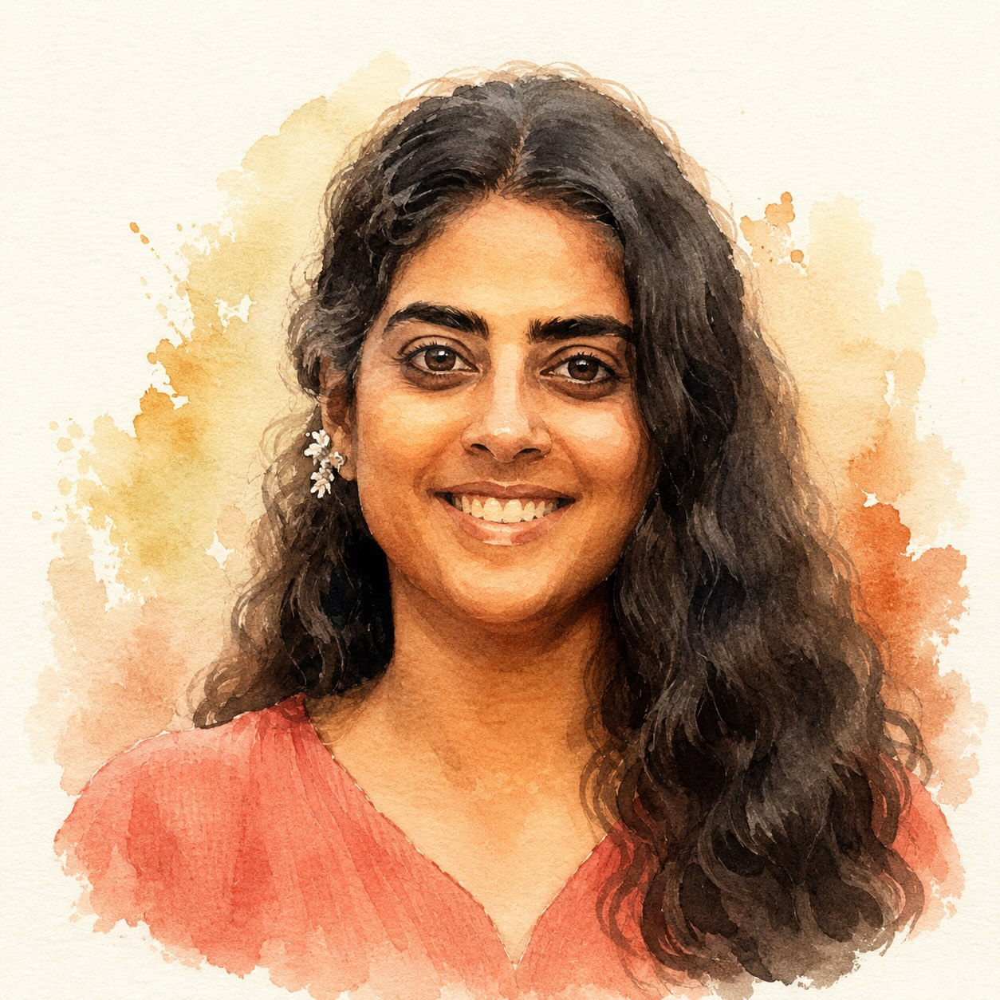

Sree
co-creator
[Sree's background — a few sentences to come. Where she's from, what she does day-to-day, what drew her to Astrology 101, what she hopes unfolds.]
A companion app, built alongside Vikram Devatha's Astrology 101 cohort — and the infamous blue file that started it.
Built alongside Vikram's Astrology 101 cohort at allthingsvedic.in. — Sree & Sanchi · alongside the class
The companion app is at app.atvcompanion.in — planet tracks, references, and reflection prompts, built alongside the cohort. Sign in to enter.
Enter the app →
Every time I had to refer to astrology, I'd reach for my infamous blue file — a binder of printouts — or the iPad with all the PDFs. In a jiffy, if I wanted to find a specific piece of information, it was impossible.
I don't learn by memory. I need a lot of references all the time. I needed something pocket-friendly and handy — something I could open up and remember, or search.
That was the genesis. But it also coincided with something deep — something touching and resonating for me. I'm still yet to understand why I have a deep calling in this path. But I am in a flow, and that's what matters, right?
— Sree
co-creator
[Sree's background — a few sentences to come. Where she's from, what she does day-to-day, what drew her to Astrology 101, what she hopes unfolds.]

co-creator
[Sanchi's background — a few sentences to come. Where she's from, what she does day-to-day, what drew her to Astrology 101, what she hopes unfolds.]

teacher · mentor
[Vikram's background — a few sentences to come. His path, his teaching, what he opens up for students. Class lives at allthingsvedic.in.]
— Sree
Far from complete — but as Vikram says, we set the intention, we learn in layers, one step at a time. Know yourself, one layer at a time.
— Sanchi
[Sanchi's reflection on the year — a few lines in her own voice. What this year of Astrology 101 has stirred, what's still settling, where she finds herself now.]